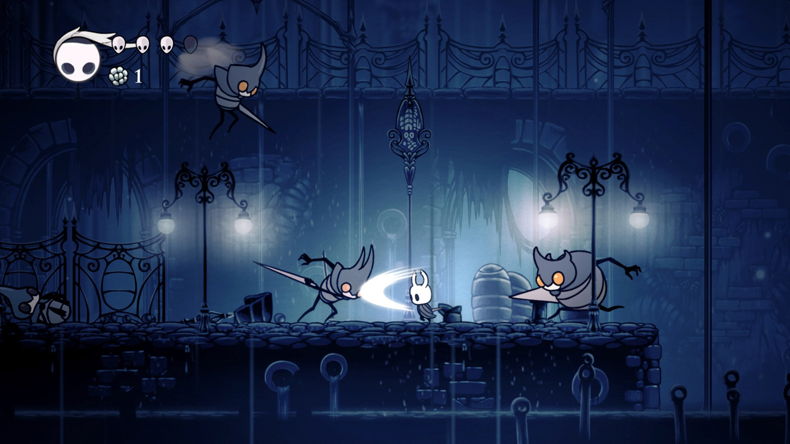

Mecânica
Jogabilidade
O Cavaleiro pode explorar o vasto mundo interligado de Hallownest usando várias técnicas de movimento e combate. No estilo clássico de Metroidvania, há áreas do mundo que o Cavaleiro não pode acessar sem obter certas Habilidades ou Itens. Mapas de cada área podem ser comprados de um comerciante geralmente escondido em algum lugar daquela área, o Cavaleiro também pode comprar melhorias para colocar marcadores no mapa ou para possibilitar que o mapa se revele à medida que for explorado. Várias áreas contém um 'chefe' que o Cavaleiro deve derrotar para continuar, e também vários mini-chefes que largam recompensas ou melhorias.
Inimigos derrotados derrubam Geo, uma moeda que o Cavaleiro pode usar para comprar itens dos comerciantes. Se o Cavaleiro for morto, será revivido no último lugar em que descansou e perderá todo seu Geo. Ele deve retornar ao lugar em que morreu e derrotar sua Sombra para recuperar o Geo perdido. O Cavaleiro também ganha ALMA golpeando inimigos, que pode ser usada para recuperar pontos de vida ou ativar habilidades especiais. Vida também pode ser recuperada nas Fontes Termais, que ficam localizadas pelo mundo, ou descansando em um Banco.
A princípio, não existem objetivos definidos em Hollow Knight. O jogador deve explorar cada canto do cenário para adquirir novas habilidades que dão acesso a novas áreas ou ajudam a enfrentar inimigos mais difíceis. A história é contada aos poucos por meio de diálogos com outros personagens e itens encontrados no game.
A jogabilidade mistura elementos de jogos plataforma com um combate estilo “Dark Souls“, ou seja, que exige destreza e paciência do jogador para entender os padrões de ataque dos inimigos, principalmente dos “chefões”.
O Cavaleiro realiza ataques com sua “espada-agulha”, e alguns movimentos especiais custam “ALMA”, obtida ao derrotar inimigos. Ela também serve para recuperar um pouco da vida do Cavaleiro.
Ao morrer, o Cavaleiro perde todos os “geos” (a moeda do jogo) momentaneamente, além de metade da sua barra de energia. Ao voltar para o local da morte, você deve derrotar um fantasma do Cavaleiro para recuperar tudo. Se morrer novamente antes de matar o fantasma, todo o dinheiro é perdido definitivamente.